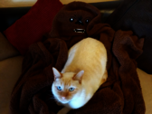
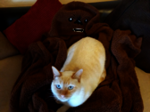
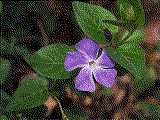
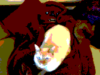
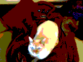
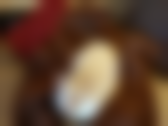

→
→This program has some library prerequisites. Please ensure you have GLFW 3 and GLEW installed. This program uses OpenGL for display purposes, and requires at least OpenGL 4.1. This version was originally chosen as it is the highest OpenGL version that Mac OSX supports. While it's probably not strictly required for this assignment, my renderer expects this version, and I unfortunately did not have time to refactor for 3.X support.
I've chosen not to use the provided starter code, instead opting to base my program on my OpenGL boilerplate that I've been using for graphics classes this year. The repository for this can be found on Github. My program allows for an interactive interface; the only command line my program accepts is a filename to open.
./imaging [filename]
My program supports many filetypes thanks to the image loading library stb_image that I am using. Specifically, all the provided images load, as well as any random .png, .bmp, and .jpg files that I have tried
Once a file is loaded, a window should appear with the image showing. To perform an operation, press Enter. Assuming your window manager is well-behaved, the window should disappear. Unfortunately, it seems that the Mac OS window manager does not respect GLFW's hide window command, so for this reason I request you use the Linux version for grading. Regardless, in the command window, you should see:
Enter a command:
If your window actually hid itself, the command prompt likely has focus. If not, click into it and enter a command and press enter. The command should execute. If any of the parameters are out of the specified range, the help message for that command will be shown and the command will not proceed.
The first command is help. Press enter and type help at the prompt. You should see a listing similar to the following:
help Available commands: undo edgeStrategy wrap/mirror/zero/clamp/random showConfig setUndoHistory [2, infinity]/unlimited save <filename>.<png/bmp> antialiasFilter nearestNeighbor/hat/mitchell grayscale sharpen contrast [-infinity, infinity] spiral [-infinity, infinity] [-infinity, infinity] saturation [-infinity, infinity] gamma [0, infinity] blur [3, 5, 7, ..., min(width, height)] brighten [0, infinity] translate [-width, width] [-height, height] ripple crop [0, width-1] [0, height-1] [1, width-1-x] [1, height-1-y] quantize [1, 8] scale (0 .. infinity] (0 .. infinity] mirror horizontal/vertical/both randomDither [1, 8] floydSteinberg [1, 8] edgeDetect [-infinity, infinity]
For each supported operation, the command to execute is listed, followed by the ranges of each operation. If the word "infinity" appears, that just means that there is no formal upper or lower bound to the argument. I make no promises that you can actually scale your image up to infinity, or that "infinity" is a literal that you can type in have work. Ranges use standard interval notation, so (0, 4] is 1, 2, 3, 4, where 0 is excluded and 4 is included.
The program maintains some state. Executing the showConfig command should result in output similar to:
showConfig Undo history size limit = 10 Current undo history size = 1 Edge handling strategy = mirror Antialiasing filter = nearest neighbor
Shown here are the default state values.
I've implemented a simple undo mechanism. Internally, a linked list of Images is maintained, and every new image operation creates a new image, which is pushed into the front of the list. Thus, in order to undo an operation, one just needs to pop the head off the list. The undo history is limited in order to avoid running out of memory.
Execute setUndoHistory n where n is a number greater than two to limit the history. Alternately, you can execute setUndoHistory unlimited to remove the limit. If you set the history to a number smaller than the current size of the undo history list, the oldest elements will be removed to bring the history under the size limit. Similarly, if your history grows too large, the oldest element in the list will be removed.
To save a file, one simply has to execture the command save filename. This will write a .png file with the given filename to the current directory. You can also force the program to write out a .bmp file by executing save filename.bmp. The image writing library that I am using is stb_image_write, which is not optimized for small file sizes. Unfortunately, this means that even the .png files produced will have fairly large file sizes. However, given that .png files are written by default, this means that alpha channels are supported by my program, and are generally considered by all the operations.
For several operations where one has to do "something reasonable" at the image edges, I've implemented several options. This can be set using this command.
→When in wrap mode, wrap-around behavior is used. For the range [0, 5], if one wants to get 6, they will instead get 0, and if one wants to get -1, they will instead get 5.
→When in mirror mode, mirroring behavior is used. For the range [0, 5], if one wants to get 6, they will instead get 4, and if one wants to get -1, they will instead get 2.
→When in zero mode, values outside the valid range are not returned. The end result is typically a continue statement inside a sum loop.
→When in clamp mode, values are clamped to the valid range.
→When in random mode, a random value is chosen from the valid range if a value outside the valid range is requested. Focus groups have determined that this behavior is "super useful."
The antialias filter to be used by scales and traslations can be set using this command. The three required filters (nearestNeighbor, hat, and mitchell) are all implemented and can be selected by name.
→ 0.5 →→ 2.0 →Brighten multiplies each color channel by the given factor. Alpha is ignored.


First the average luminance of each pixel is computed. After that, each pixel is linearly interpolated against the average luminance, using the contrast factor as the interpolation value.

First the grayscale image is computed. Then each pixel is linearly interpolated against its corresponding pixel in the grayscale image using the saturation factor as the interpolation value.
 → 0.0 →→ 0.5 →→ 2.0 →
→ 0.0 →→ 0.5 →→ 2.0 →Gamma is implemented using the formula: c_new = c_old^(1/gamma). Alpha is ignored. gamma(0) is implemented as a special case, where 0 is output for each pixel, unless its value is 1, in which case 1 is output. You can see the effect of this in the sample above, where all but a few pixels are driven to zero.
→ 0, 0, 84, 63 → → 84, 63, 84, 63 →
→ 84, 63, 84, 63 → → 42, 63, 84, 63 →
→ 42, 63, 84, 63 →
Crop simply copies the pixels from the requested region of the source image to the destination.
→ 4 →→ 2 → → 1 →
→ 1 →Quantize with the formula c_new = floor(c_old * b) / (b - 1). Alpha is ignored.
→ 4 →→ 2 →→ 1 →Apply random dithering with the formula c_new = floor(c_old * r * b) / (b - 1), where r is a random number in the range of [-0.5, 0.5]. c_new is then clamped to the range of [0, 1]. Alpha is ignored.
→ 4 →→ 2 →→ 1 →Floyd Steinberg dithering is performed using the error diffusion method described in the assignment writeup, ignoring the alpha channel. For edges, I distribute the error that would be off the edge evenly across the pixels that are not off the edge. The only exception to this is with the bottom row. I decided not to distribute the error that would go down to the rightmost pixel. I was doing this, but it created a bright row on the bottom that I feld did not look correct. For reference, I've included results for distributing on the bottom row. Notice the apparent bright row in the 1 and 2 bit images.
→ 4 →→ 2 →→ 1 →Here is a gallery of the different quantization and dithering methods for comparison. From left to right are listed: Original, Quantized, Random Dithered, Floyd Steinberg Dithered. From top to bottom are listed 1, 2, 3, 4, and 5 bits.
 

For this portion of the assignment, I've implemented a generic convolve function. The genral scheme is:
The convolve function also takes an EdgeStrategy (See Support Functionality above) to tell it what to do at edges. Here are some examples of blurring with the different edge strategies:
→ 27, zero →→ 27, wrap →→ 27, mirror →→ 27, clamp →→ 27, random →The main convolve implementation function is implemented as a C++ template function, however there are a few Image class methods that further wrap this to support precomutin the filter table from a filter function. These class member functions provide getters and setters that read from the pixel buffer, and write to the pixel buffer.
Blur convolves the image with the Gaussian filter given in the assignment. This function supports EdgeStrategies.
Sharpen convolves with the constant 3 x 3 filter given in the assignment writeup. This function supports EdgeStrategies.
→ 75 →→ 100 →→ 255 →Edge Detect directly calls the convolve implementation function. It separately convolves with the horizontal and vertical gradient filters given in the writeup. The getter reads a pixel from the Image, and the setters write the gradient out to separate buffers. For both of these, I use the clamp edge strategy. I picked clamp, as I felt it would be the least likely to create an artificial "edge" along the edges of the image. If we clamp the border pixels, any edges that go to the edge of the image will continue in a straight line out from the edge.
After these convolutions are done, I loop over each pixel of the Image. For each pixel, I calculate the luminance of the horizontal and vertical gradients at that point. Then I calculate the composite gradient image magnitude, G, using the two luminances. Finally, if G is greater than the threshold, I write white out for that pixel, otherwise I output black. For all pixels, alpha is set to fully opaque.
I've combined minification and magnification into a single function. There is a good amount of orchestration going on here:
First, the function determines if scaling is occuring in just one, or both axis. If both, it recursively scales just in X, then scales the result of that just in Y.
Once scaling has begun, the correct filterWidth and filter function are obtained, as well as the correct argument function is determined by examining the scale factor. If the factor is less than zero, minify is selected, otherwise magnify is selected.
Next each pixel is scaled in X. For each pixel (a, b), y is fixed to equal b. Then the filter is centered on a using the filter width returned by the filter selection function. For each pixel under the filter, the pixel is multiplied by the result of the filter function. As these weights do not add up to one, the resulting pixel is divided by the sum of the weights. Finally, this process is repeated in the Y direction, with x being fixed to equal a, and the filter being centered on b.
→ nearest, 20.5, 20.5 →→ hat, 20.5, 20.5 →→ mitchell, 20.5, 20.5 →Translation has similar orchestration requirements to scale. Fortunately much of the complexity is eliminated since only one possible operation occurs. However, fear not, there is still complictaion here! I've implemented configurable EdgeStrategies here, similar to the convolution functions. Example of translation with different edge strategies can be seen in the Support Functionality section above.
First, we test if we are translating in both X and Y, or just one or the other. If both, we recursively translate in just X, then translate the result of that in just Y.
Next, we test if deltaX and deltaY are integers. If they are, we switch to nearest neighbor for those axis. Since nearest neighbor will result in only one iteration, and the function itself is practically a no-op, this is morally the same as having a special case for integer shifting. However, due to this we need separate filterFunctions and widths for X and Y.
Next we enter the translation loop in X. For all pixels (a, b), we fix y to be equal to b, and we center the filter over a. We constrain x to the range specified by the EdgeStrategy using a constrain function. The constrain function takes a value, a max value, and an EdgeStrategy, and returns either the original value (if it was in range), or some value in the range of [0, max] based on the given strategy. This function is not super-robust unfortunately. In an ideal world, it'd take a min, and not require min be zero, and I believe it does the wrong thing if you ask for a value more than two times outside the range. User exposure to this issue should be mostly mitigated, but users are requested to try not to do that.
Regardless of all of that, a mapped X is obtained, and this value is the pixel to be multiplied by the filter weight. A filter weight is calculated using the original x (so if x is -1, but constrain returned 7, -1 is still used to calculate the filter weight), and is multiplied by the pixel. These values are summed up, and divided by the sum of contributions. Finally, this process is repeated in Y, with x being fixed to equal a, and the filter being centered over b.
I've implemented a few extra operations. Some are cooler than others obviously, but they exist regardless, and will all be listed here.
I maintain an undo history, which is a linked list of every intermediate image between the original and the current, truncated for the history size. I thought it would be fun to find some way to collapse the history into one single image, thus spiral was born.
For spiral, I've implemented a scheme, where each image in the undo history is interpolated through, following the path of a logarithmic spiral. The logarithmic spiral is defined as:
r = a * e^(b * θ)
Which gives us the radius out from the origin of the spiral at any given θ. Here, a and b are constants that control what sort of spiral you get. Thus, if you execute the command spiral a b you produce the spiral interpolation of the undo history:
rMax = a * e^(b * 2 * π * undoHistory.size()) is calculated
After this procedure is complete, you should get images similar to:
At first I couldn't get spiral working correctly. It turns out that math was hard, and I'm kind of bad at it. While I couldn't get spiral working correctly, I did get this ripple effect. The beginning process is for ripple is similar to spiral. Convert (x, y) to polar coordinates. However, this time we save theta, and the constant value c such that rCurr = a * e^(b * θCurr * c).
Next, we resize images as before, then for each pixel, we get the spiral at the current theta * the c calculated above, floor it, and mod by the undo history size to get the left interpolant. To get the right, we take the next index. We mod the spiral value used to get the left interpolant by 1 to get the interpolation value. Then we use these to create the resulting pixel.
After this procedure is complete, you should get images similar to:

{kind=link}
{kind=link}
{kind=link}
{kind=link}
{kind=link}